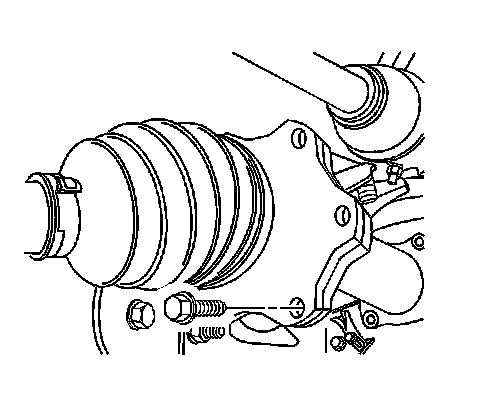
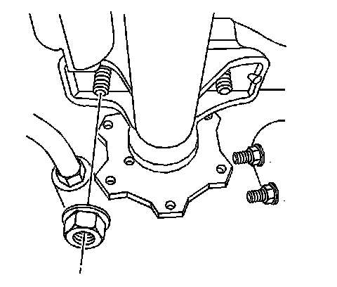
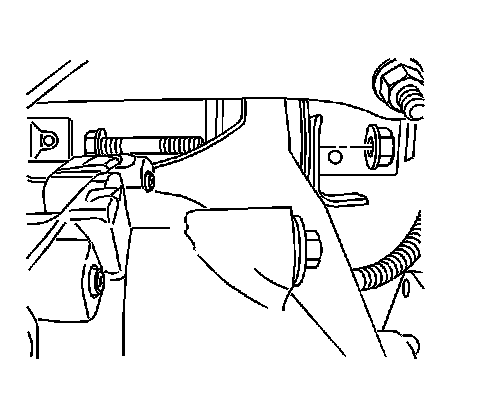
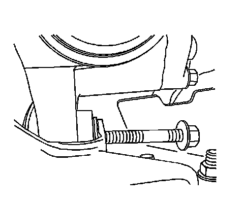

Differential Carrier Assembly Replacement (2500 4WD)
Differential Carrier Assembly Replacement (2500 4WD)
Removal Procedure
1. Turn the steering wheel all the way to the left.
2. Raise the vehicle. Refer to Lifting and Jacking the Vehicle.
3. Place jack or utility stands at the rear end of the vehicle.
4. Remove the engine protection shield.
5. Remove the front differential carrier assembly shield, if equipped.
6. Drain the differential carrier assembly. Refer to Front Axle Lubricant Replacement.
7. Disconnect the front propeller shaft from the differential carrier assembly.
8. Remove the relay rod.
9. Support the differential carrier assembly with a transmission jack or equivalent.

10. Remove the wheel drive shaft inboard flange bolts from the inner axle shaft, both sides.

11. Disconnect the electrical connector from the front axle actuator, S4WD axle only.
12. Disconnect the wire harness from the inner axle shaft housing, S4WD axle only.
13. Disconnect the wire harness from the differential carrier assembly, S4WD axle only.

14. Disconnect the vent hose from the differential carrier assembly.

15. Remove the inner axle housing nuts and washers from the bracket.

16. Remove the differential carrier assembly upper mounting bolt and the nut.
17. Pivot the differential carrier assembly forward and down on the lower mount bolt while it is being supported by the transmission jack.
18. Secure the differential carrier assembly to the jack.

19. Remove the differential carrier assembly lower mounting bolt and the nut.
20. Remove the differential carrier assembly.
Installation Procedure
1. Install the differential carrier assembly.
2. Install the differential carrier assembly lower mounting bolt and the nut.
Do not tighten the bolt at this time.
3. Pivot the differential carrier assembly up and back on the lower mount bolt while it is being supported by the transmission jack.
4. Install the differential carrier assembly upper mounting bolt and the nut.
Notice: Refer to Fastener Notice.
5. Install the inner axle housing washers and nuts to the bracket.
^ Tighten the inner axle housing nuts to 100 Nm (75 lb ft).
^ Tighten the upper and the lower differential carrier assembly bolts to 100 Nm (75 lb ft).
6. Connect the vent hose to the differential carrier assembly.
7. Remove the transmission jack.
8. Connect the wire harness to the differential carrier assembly, S4WD axle only.
9. Connect the wire harness to the inner axle shaft housing, S4WD axle only.
10. Connect the electrical connector to the front axle actuator, S4WD axle only.
11. Install the wheel drive shaft inboard flange to inner axle shaft bolts, both sides.
Tighten the wheel drive shaft inboard flange to inner axle shaft bolts to 79 Nm (58 lb ft).
12. Install the relay rod.
13. Install the front propeller shaft to the differential carrier assembly.
14. Fill the differential carrier assembly. Use the correct fluid. Refer to Front Axle Lubricant Replacement.
15. Install the front differential carrier assembly shield, if equipped.
16. Install the engine protection shield.
17. Remove the utility stands.
18. Lower the vehicle.